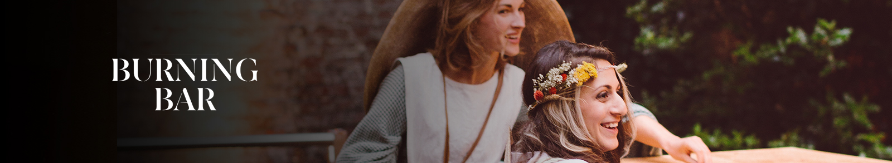
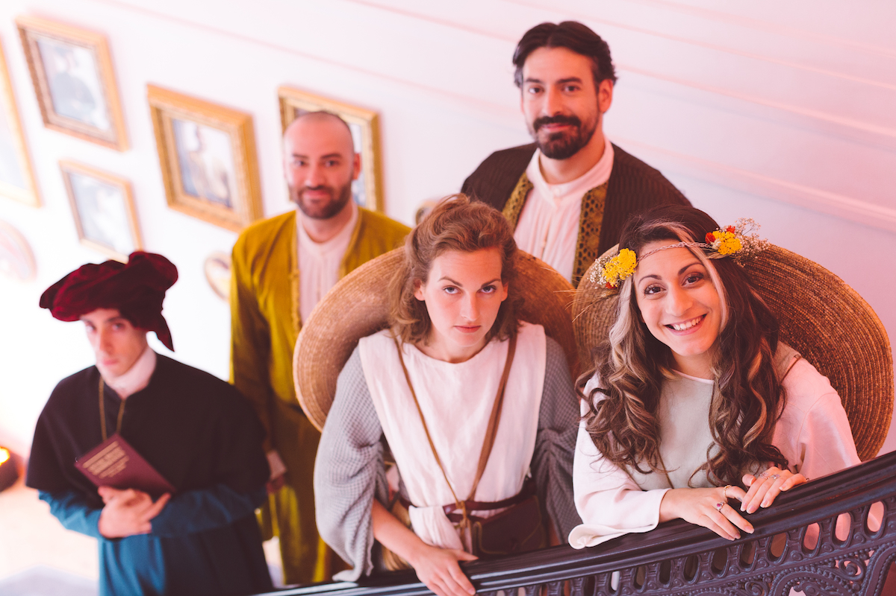

EXPÉRIENCE IMMERSIVE GRIMBERGEN
Le Burning Bar est le premier bar éphémère qui brûle tous les soirs et renaît de ses cendres le lendemain. Pendant deux semaines en juin 2019, dans un hôtel particulier au cœur du Vieux Lille, plus de 3 000 visiteurs ont découvert les 900 ans d’histoire de l’abbaye de Grimbergen à travers des expériences sensorielles.
Big Drama a imaginé un univers immersif issu de l’histoire unique de l’abbaye, créant des personnages historiques dépositaires d’un savoir ancestral sur la fabrication et la dégustation de la bière. Tout droit sortis de l’abbaye, ces personnages partageaient avec les invités leur passion pour leur métier mais aussi leurs états d’âmes, leurs conflits et leurs intrigues amoureuses.
Big Drama a imaginé un univers immersif issu de l’histoire unique de l’abbaye, créant des personnages historiques dépositaires d’un savoir ancestral sur la fabrication et la dégustation de la bière. Tout droit sortis de l’abbaye, ces personnages partageaient avec les invités leur passion pour leur métier mais aussi leurs états d’âmes, leurs conflits et leurs intrigues amoureuses.

L'abus d'alcool est dangereux pour la santé. A consommer avec modération. Photos : Hands Studio.
Conception et production de spectacles immersifs